ВЫХОДНОЙ ВАЛ > ПРОВЕРКА |
| 1. ПРОВЕРЬТЕ ВЫХОДНОЙ ВАЛ |
| 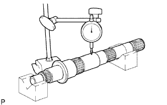 |
Измерьте биение выходного вала индикатором часового типа.
| 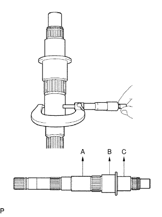 |
С помощью микрометра измерьте диаметр шейки в точках A, B и C выходного вала.
| Параметр / Устройство | Нормальное состояние |
| Шейка A | 38,979 - 38,995 мм (1,5346 - 1,5352 дюйма) |
| Шейка B | 46,984 - 47,000 мм (1,8498 - 1,8504 дюйма) |
| Шейка C | 37,984 - 38,000 мм (1,4954 - 1,4961 дюйма) |
| 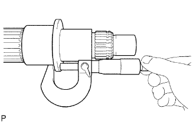 |
С помощью микрометра измерьте толщину фланца выходного вала, как показано на рисунке.
| 2. ПРОВЕРЬТЕ ШЕСТЕРНЮ 3-Й ПЕРЕДАЧИ |
| 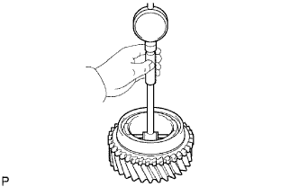 |
С помощью нутромера измерьте внутренний диаметр шестерни 3-й передачи.
| 3. ПРОВЕРЬТЕ ШЕСТЕРНЮ 2-Й ПЕРЕДАЧИ |
| 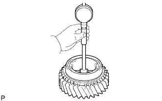 |
С помощью нутромера измерьте внутренний диаметр шестерни 2-й передачи.
| 4. ПРОВЕРЬТЕ ШЕСТЕРНЮ 1-Й ПЕРЕДАЧИ |
| 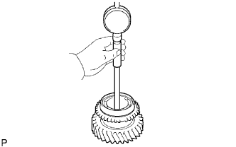 |
С помощью нутромера измерьте внутренний диаметр шестерни 1-й передачи.
| 5. ПРОВЕРЬТЕ УПОРНУЮ ШАЙБУ ШЕСТЕРНИ 1-Й ПЕРЕДАЧИ |
| 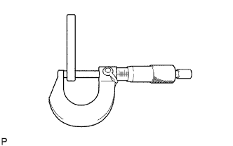 |
С помощью микрометра измерьте толщину упорной шайбы.
| 6. ПРОВЕРЬТЕ НАБОР БЛОКИРУЮЩИХ КОЛЕЦ СИНХРОНИЗАТОРА № 1 (для шестерни 1-й передачи) |
| 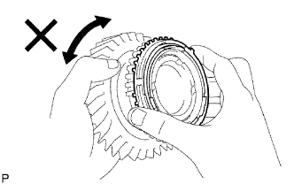 |
Нанесите трансмиссионное масло на конус шестерни 1-й передачи и убедитесь, что набор блокирующих колец синхронизатора № 1 не поворачивается ни в одном направлении, когда набор блокирующих колец синхронизатора № 1 прижат.
| 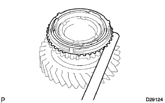 |
Прижав блокирующее кольцо синхронизатора № 1 к конусу шестерни 1-й передачи, измерьте зазор между блокирующим кольцом синхронизатора № 1 и шестерней 1-й передачи.
| 7. ПРОВЕРЬТЕ НАБОР БЛОКИРУЮЩИХ КОЛЕЦ СИНХРОНИЗАТОРА № 1 (для шестерни 2-й передачи) |
| 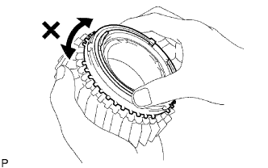 |
Нанесите трансмиссионное масло на конус шестерни 2-й передачи и убедитесь, что набор блокирующих колец синхронизатора № 1 не поворачивается ни в одном направлении, когда набор блокирующих колец синхронизатора № 1 прижат.
| 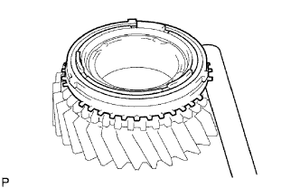 |
Прижмите набор блокирующих колец синхронизатора № 1 к конусу шестерни 2-й передачи. Измерьте зазор между набором блокирующих колец синхронизатора № 1 и шестерней 2-й передачи.
| 8. ПРОВЕРЬТЕ БЛОКИРУЮЩЕЕ КОЛЬЦО СИНХРОНИЗАТОРА № 2 (для шестерни 3-й передачи) |
| 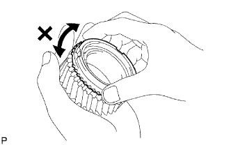 |
Нанесите трансмиссионное масло на конус шестерни 3-й передачи и убедитесь, что блокирующее кольцо синхронизатора № 2 не поворачивается ни одном направлении, прижимая блокирующее кольцо синхронизатора № 2.
| 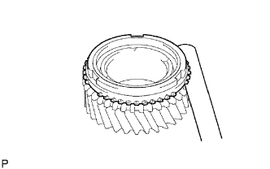 |
Прижмите блокирующее кольцо синхронизатора № 2 к конусу шестерни 3-й передачи. Измерьте зазор между блокирующим кольцом синхронизатора № 2 (для шестерни 3-й передачи) и шестерней 3-й передачи.
| 9. ПРОВЕРЬТЕ ШЕСТЕРНЮ ПЕРЕДАЧИ ЗАДНЕГО ХОДА |
| 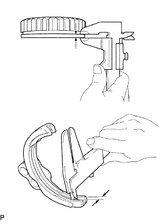 |
С помощью штангенциркуля измерьте ширину канавки на вилке переключения передач № 1 и толщину фланца шестерни передачи заднего хода. Затем рассчитайте зазор между вилкой переключения передач № 1 и фланцем.
| 10. ПРОВЕРЬТЕ СТУПИЦУ СКОЛЬЗЯЩЕЙ МУФТЫ ТРАНСМИССИИ № 1 |
| 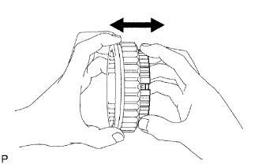 |
Проверьте взаимное скольжение ступицы скользящей муфты № 1 и шестерни передачи заднего хода.
Проверьте на износ шлицевую часть шестерни передачи заднего хода.
| 11. ПРОВЕРЬТЕ СКОЛЬЗЯЩУЮ МУФТУ ТРАНСМИССИИ № 2 |
| 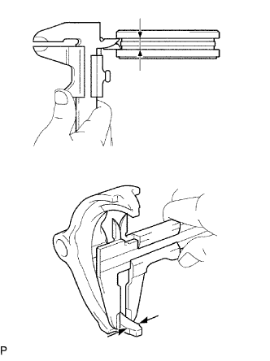 |
С помощью штангенциркуля измерьте ширину канавки скользящей муфты № 2 и толщину зубца на вилке переключения передач № 2. Затем рассчитайте зазор между скользящей муфтой № 2 и зубцом.
| 12. ПРОВЕРЬТЕ СТУПИЦУ СКОЛЬЗЯЩЕЙ МУФТЫ ТРАНСМИССИИ № 2 |
| 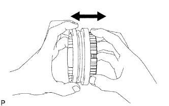 |
Проверьте взаимное скольжение ступицы скользящей муфты № 2 и скользящей муфты № 2.
Проверьте шлицы ступицы скользящей муфты № 1 на износ.
Проверьте, не изношен ли конец скользящей муфты шлицевой части шестерни заднего хода.